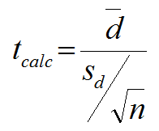

Evidence against the Championship Hangover
Despite the evidence we've seen that points to the existence of a championship hangover, there is a legitimate argument to be made against its existence. The logic is essentially that NBA Championship teams are obviously good teams, and so they effectively set the bar higher for them to improve on. For an extreme example, if a team were to win all 82 games and go undefeated in the post-season, it would be extremely difficult for them not to get worse the next season. The key to this argument is that this idea of regressing back to average applies to all good teams in the NBA, not just the one that wins the championship.
 Source: https://leansigmacorporation.com/paired-t-test-with-minitab/We will be using a paired t-test for this section, which is a statistical test used to determine if the means of two datasets are statistically significantly different. The two datasets we'll be comparing are the win% differential for the NBA champions and the win% differential for the runner-ups. Existence of the championship hangover would imply that these two datasets are significantly different. Above is the formula for the t-test statistic. The paired t-test works by creating a new dataset by calculating the differences between the two datasets at each index, and d-bar represents the average of these differences. S (subscript d) is the standard deviation of this data set, and n is the number of samples (in this case, years). To test if these two data sets is the same thing as testing if this 3rd dataset's average value is statistically equal to 0. That's the null hypothesis. After calculating this test statistic, we use the t-cumulative distribution function to get a p-value, which is essentially the probability that the differences between the two data sets are completely due to random variation (so no significant difference).
The test statistic for the data was about -0.9327. By plugging this into the tcdf function, we get a p-value of 0.3462. Conventionally, the largest p-value that will be accepted to reject the null hypothesis is 0.05, and our p-value is much higher than this. So, we failed to reject the null hypothesis, and the data points to the conclusion that there is no statistically significant difference between NBA champions and their runner-up counterparts in terms of win% change for the following season.
However, this doesn't necessarilly discount the idea of a championship hangover. After all, win% is only one statistic and we only tested against one other group, the runner-ups. Whether or not you believe in the championship hangover, there's a lot of interesting data behind sports and sports predictions, and metrics not lining up with conventional theory is something that has been true of sports since data analytics became big. Just look at how they treat Brad Pitt in Moneyball before it starts working.
Historical Counterexample - Miami Heat 2011-2012, 2012-2013
In the 2010 offseason, the Miami Heat formed the "Big 3" team, named after their core of
3 stars; Lebron James, Chris Bosh, and Dwyane Wade. James was considered to be the best player in the NBA
at the time and Bosh and Wade were considered top-5 players at their position.
The team dominated the NBA and made the finals every year from 2010-2014. In our analysis, we found that "super teams"
such as the Heat were immune from championship hangover as long as the stars remained together. This is because key players remain on the team and they
endure less fatigue as they are able to distribute scoring and defensive responsibilities amongst each other.